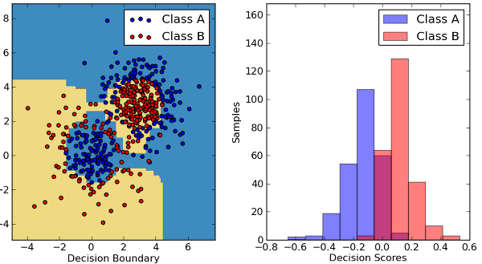
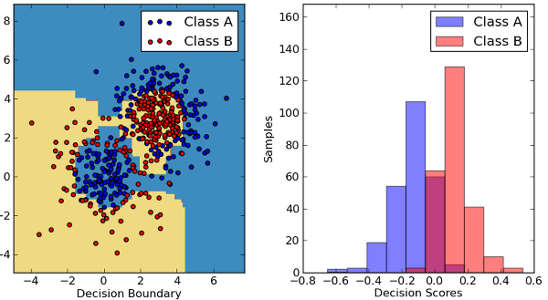
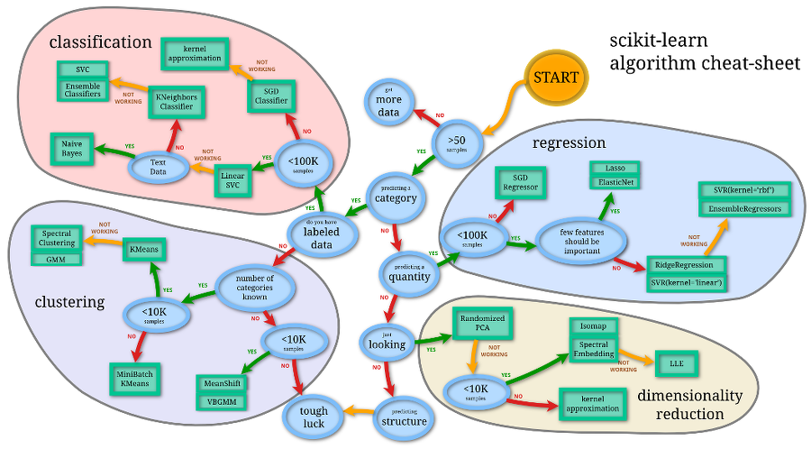
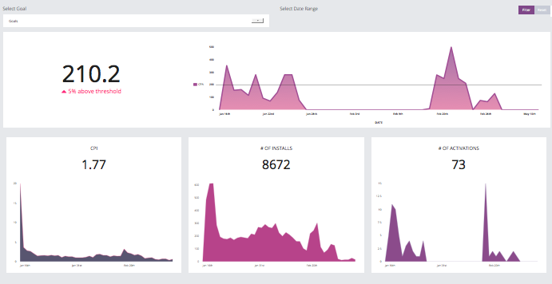
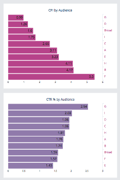
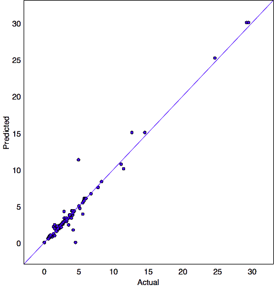

- Given: set of n samples of data
- Goal: predict properties of unknown data



from sklearn import svm train_X = ... # load sample inputs train_y = ... # load sample outputs to_predict = ... # we want to predict the output of this value clf = svm.SVC() # create a classifier clf.fit(train_X, train_y) # train the classifier prediction = clf.predict(to_predict) # predict our unknown output
 

christian, gaelan, azhar, logan @galloplabs.com